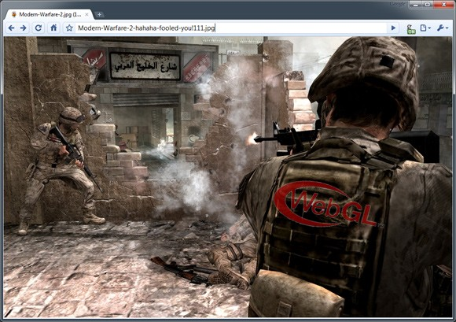

Firefox OS - What, why and how
Firefox OS - What, why and how
- What is Firefox OS
- Why make it?
- Great .. But how is it possible!?
Olav Nymoen, Comoyo
Gecko and the impossible: webAPIs

webAPIs: Prototypes for the mobile web

Silos vs An open ecosystem

How are we making Firefox OS?

We're helping Mozilla making it happeni!

Useful Utility Competition